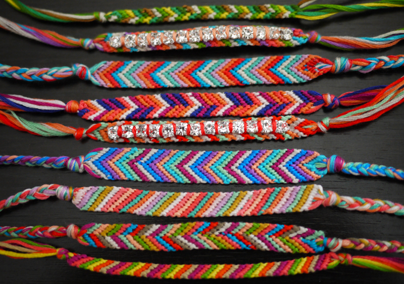
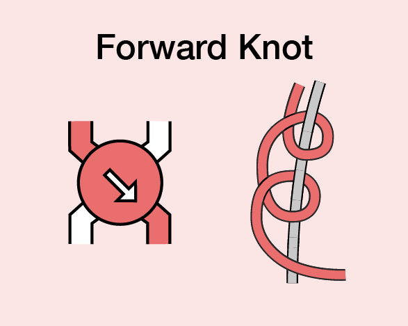
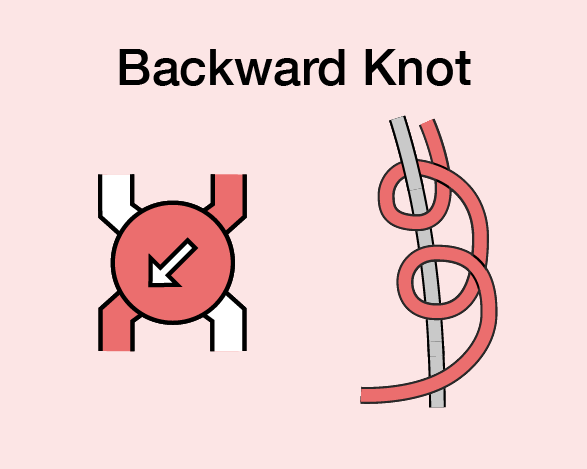
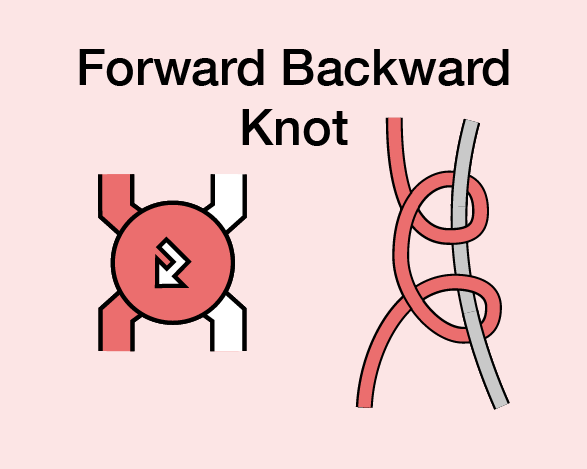
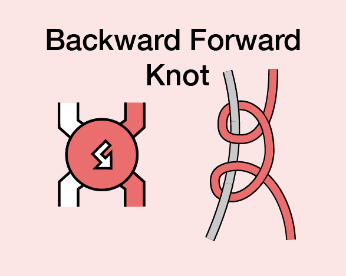

Making Friendship Bracelets

You only need a few inexpensive materials to make your own firnedship bracelets
- Embroidery Floss
- Scissors
- Something to hold down your string while tying, like tape or a binder clip
There are four kinds of knots used in making bracelets
Forward knot

Backward Knot

Forward Backward Knot

Backward Forward Knot

The website Braceletbook has hundreds of patterns to make bracelets.